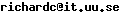

[erlang-questions] scope of variables
Richard Carlsson
<>
Mon Sep 4 16:06:01 CEST 2006
Erik Reitsma (RY/ETM) wrote:
> Changing it to
>
> -define(foo(X), case X of [ ] -> @a end).
>
> gives only warnings, but you cannot use this macro twice in the same
> scope:
True. You actually need to wrap the body in a fun-application to
prevent it from exporting its bindings:
-define(wrap(Body), ((fun ()-> (Body) end)())).
-define(foo(X), ?wrap( case X of [] -> @a end )).
/Richard
] -> @a end).
>
> gives only warnings, but you cannot use this macro twice in the same
> scope:
True. You actually need to wrap the body in a fun-application to
prevent it from exporting its bindings:
-define(wrap(Body), ((fun ()-> (Body) end)())).
-define(foo(X), ?wrap( case X of [] -> @a end )).
/Richard
More information about the erlang-questions
mailing list